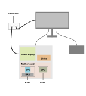

Welcome to vJoule's documentation
The environmental costs of the software and infrastructure they build and deploy are increasingly important to developers today. However, the collection of energy consumption data from machines can be time consuming and is generally hardware dependent.

vJoule is a tool that interfaces multiple sources of energy consumption and centralizes all energy readings in one place to provide a higher abstraction for developers and to help measure energy consumption. This document will give you all the information you need to have a successful start with vJoule.
vJoule is a tool developed at Davidson Consulting and inspired by other tools like PowerAPI.

Getting started
This section will help you get started with vJoule.
You'll learn how vJoules works, how to install it and how to test it.
What is vJoule?
vJoule is a tool that can be used to retreive the energy consumption of a linux operated device. Technically, vJoule is built on a plugin system with two different kind of plugins :
core, this kind of plugin will define the behavior of vJoule and perform the information gathering from sensor plugins and the effective result computation. In this vJoule version two core plugins are implemented :simpleretreives the consumption acquired by sensor plugins and store them in files to be read by external programs. (%CPU, %GPU, etc.).dumperretreives the consumption acquired by sensor plugins, and system usage of running processes and dump those metrics in csv files for cold analysis.
sensor, this kind of plugin are used to retreive system information usefull for the core plugin. There are different kind of sensor plugin, in this vJoule version three plugin types are implemented :cpuplugin that retreives the energy consumption of the CPU of the system, (rapl)ramplugin that retreives the energy consumption of the RAM of the system (rapl)gpuplugin that retreives the energy consumption of the GPUs of the system (rapl,nvidia)pduplugin that retreives the energy consumption from a Smart PDU (yocto)
To monitor your consumption of your machine the simple core plugin will come
in handy. This documentation will mainly focus on this core plugin.
There are currently have two ways to interact with vJoule :
- As a command line interface : useful for easy and quick usage
- As set of APIs in different languages, useful if you want to interact with vJoule in a program, and monitor more complex applications.
Installation
From deb package (recommended)
vJoule can be installed from deb files found in the Github
releases. The vjoule-tools_<VERSION>.deb package will install a
systemd service: vjoule_service and a client program simply named
vjoule.
You can install the .deb file (once downloaded) by running dpkg -i vjoule-tools_<VERSION>.deb.
From sources
vJoules uses CMake as a build tool.
You will need to have installed cmake, g++, git and nvidia-ml.
git clone https://github.com/davidson-consulting/vjoule.git
cd vjoule
mkdir .build
cd .build
cmake ..
make -j8
sudo make install
First tests
Now that vJoule is installed on your computer, let's try it. Remember that vJoule is available through two interfaces:
- A command line interface, useful for simple and quick usage
- A linux service, useful if you need to embed vJoule in a program
This section presents just a basic test to make sure vjoule is properly installed. A more thorough tutorial is presented in the section Simple core.
vJoule, through the service
vJoule is available through a linux systemd service.
$ sudo systemctl start vjoule_service
You can verify that the service is up either by checking with systemctl:
$ sudo systemctl status vjoule_service
Or by checking for the log file :
$ cat /etc/vjoule/service.log
The default configuration of vJoule only retreive RAPL information. See section Simple core, for more configuration options.
vJoule, through the command line interface (CLI)
vJoule CLI is conveniently called vjoule. You can use it to estimate the energy consumption of a given command, like this:
$ # Here, ls is not a subcommand of vjoule
$ # We mesure the energy consummed by the ls command execution
$ vjoule ls
time 21ms856µs
PDU 0.00 J
CPU 0.17 J
RAM 0.03 J
GPU 0.02 J
You can also use vjoule on a command that needs parameters. In this case, we will estimate the energy consumption of the stress command.
$ vjoule stress --cpu 2 --timeout 2s
stress: info: [169371] dispatching hogs: 2 cpu, 0 io, 0 vm, 0 hdd
stress: info: [169371] successful run completed in 2s
time 2s53ms193µs
PDU 79.20 J
CPU 40.61 J
RAM 0.00 J
GPU 0.00 J
Of course, you can use vjoule to run, say, a Python script.
$ vjoule python myscript.py
time 1s670ms197µs
PDU 70.40 J
CPU 35.71 J
RAM 2.25 J
GPU 1.78 J
User Guide
In this section, you will learn more about the concepts and technical details about vJoule. In particular :
- vJoule uses cgroup to know which process to monitor. But what are cgroups ?
- Where are the main configuration files of vJoule? Where to find the different energy consumption estimations ?
- How can I fetch results from within a program ?
Files of interest
Once vJoule is installed, you should find a directory located in
/etc/vjoule that contains configurations, logs and results. For
example, the service configuration is located in
/etc/vjoule/config.toml.
Configuration files and logs
/etc/vjoule/config.toml: the configuration file of thevjoule_service. It can be modified to change the log level and some other options that depends on the core plugin used./etc/vjoule/service.log: the log file of thevjoule_service,
The simple core
The simple core is the core plugin used by default by the vJoule service. It
read the consumptions retreived using the sensors, and dump the results into
files. It can monitor four different kind of sensor plugins cpu, gpu, ram
and pdu.
Result files
A result directory is created, in which five files cpu, ram, gpu,
pdu_energy and pdu_power can be found in the result directory (by default
/etc/vjoule/results/):
cpu: the consumption of energy of the CPU(s) in joules since the start of the serviceram: the consumption of energy of the RAM in joules since the start of the servicegpu: the consumption of energy of the GPU(s) in joules since the start of the servicepdu_energy: the consumption of energy of the machine, according to the PDU in joules since the start of the servicepdu_power: the current power consumption measured by the PDU in watts.
Usage
A default configuration and explanation of the simple core plugin can be
acquired by running the command vjoule_service --ph simple.
For API usage
The configuration of the simple core plugin takes the parameter freq. This
parameter defines the number of iterations per second of reading from the
sensors and writing the results. However, when using an API, reading at a given
frequency can be a bit laborious and may lead to inaccurate results. For that
reason, the APIs are able to trigger the vjoule service, and no longer rely on
the service frequency. If the service is only to be used within an API (no
vjoule top), the frequency can be set to 0.
Default configuration
[sensor]
freq = 1 # frequency of update in hertz (the higher the faster)
log-lvl = "info" # debug < success < info < warn < error < none
log-path = "/etc/vjoule/log" # log file (empty means stdout)
core = "simple" # the name of the core plugin to use for the sensor
# the directory in which result will be written
output-dir = "/etc/vjoule/results"
# if true mount the result directory in tmpfs (less i/o generated by vjoule)
mount-tmpfs = true
# following configuration is optional
[cpu] # configuration to enable CPU energy reading
name = "rapl" # rapl plugin for compatible intel or amd cpus
[ram] # configuration to enable RAM energy reading
name = "rapl" # rapl plugin for compatible intel or amd cpus
[gpu:0] # configuration to enable GPU energy reading
name = "nvidia" # nvidia plugin for nvidia GPUs
# A machine can have different GPU from different constructors
# For example a integrated GPU, and an nvidia GPU card
[gpu:1] # configuration to enable GPU energy
name = "rapl" # rapl plugin form compatible intel or amd cpus
[pdu] # configuration to enable smart PDU reading
name = "yocto" # the yocto plugin to read YoctoWatt PDU consumption
On the other hand the flag mount-tmpfs will make the divider plugin mount
the result directory in tmpfs, to avoid making I/O access when writting the
result.
The dumper core
The dumper is a core plugin that can be used to dump the metrics of the
system, and the different plugin sensors. It can monitor four different kind of
sensor plugins cpu, gpu, ram and pdu, and be attached to different perf
events for the cgroups that are determined by the configuration file.
Result files
Unlike the divider plugin, the dumper writes only two files in the result directory (by default /etc/vjoule/results/):
cgroups.csv- this file contains the perf events watched by the plugin, for each of the watched cgroupsenergy.csv- this file contains the energy consumptions returned by the different connected plugins
Usage
As any plugin, a default configuration and explanation of the dumper
plugin can be acquired by running the command vjoule_service --ph dumper.
Default configuration
Here is an explanation of configuration that can be used by the dumper plugin :
[sensor]
freq = 1 # frequency of update in hertz (the higher the faster)
log-lvl = "info" # debug < success < info < warn < error < none
log-path = "/etc/vjoule/log" # log file (empty means stdout)
core = "dumper" # the name of the core plugin to use for the sensor
# the directory in which result will be written
output-dir = "/etc/vjoule/results"
# delete cgroup result directories when the cgroup no longer exists
delete-res = true
# if true mount the result directory in tmpfs (less i/o generated by vjoule)
mount-tmpfs = true
perf-counters = ["LLC_MISSES", "PERF_COUNT_HW_CPU_CYCLES"] # The list of performances counters to monitor
# following configuration is optional
# It activates some part of the dumper
[cpu] # configuration to enable CPU energy reading
name = "rapl" # rapl plugin for compatible intel or amd cpus
[ram] # configuration to enable RAM energy reading
name = "rapl" # rapl plugin for compatible intel or amd cpus
[gpu:0] # configuration to enable GPU energy reading
name = "nvidia" # nvidia plugin for nvidia GPUs
# A machine can have different GPU from different constructors
# For example a integrated GPU, and an nvidia GPU card
[gpu:1] # configuration to enable GPU energy
name = "rapl" # rapl plugin form compatible intel or amd cpus
[pdu] # configuration to enable smart PDU reading
name = "yocto" # the yocto plugin to read YoctoWatt PDU consumption
One can note the value perf-counters which is specific to the
dumper plugin and did not appear on the divider core. This value
defines the list of perf events to watched for each cgroups monitored
by vJoule, and defines the values that will be dumped inside the
cgroups.csv file.
Cgroups file
The dumper core plugin uses another configuration file, in
/etc/vjoule/cgroups, to filter the cgroups that are watched by the
sensor, and ignore unwanted cgroups. This configuration file is a
list of rules, every rules must start with a slice (a cgroup that
contains other cgroups). For example my.slice/*., will make the
sensor watch all the cgroups in the slice my.slice, and
system.slice/docker* will watch all the cgroups in system.slice
that starts with docker. Basically, it lists all the cgroups that
would be found if the command ls my_rule was run in the cgroup mount
directory. The following presents an example of configuration for
cgroup listing that has to be placed in /etc/vjoule/cgroups.
vjoule.slice/*
system.slice/docker*
my_custom.slice/my_custom_cgroup
Sensor plugins
Sensor plugins are plugins used to retreive the energy consumption of
the hardware. They are different type of sensor plugins as there are
different kind of hardware on which we can retreive energy
consumption. In this version of vJoule, there are cpu, ram and
gpu plugins implemented.
Information about the plugins can be retreived by running the command :
# vjoule_service --ph plugin_name
# for example
$ vjoule_service --ph rapl
Rapl plugin
The rapl plugin retreive the energy consumption of three kind of
hardware, cpu, ram and gpu where here the gpu is the integrated
gpu chip. RAPL is usable on intel cores only.
Depending on the machine, gpu and ram may be unavailable, in that case during the configuration warnings will be displayed, and ram and gpu energy consumption retreiving will always return 0.
Warning, there is no perf events on integrated GPU, meaning that the
gpu consumption will be acquired for the whole system but will not be
divided between cgroups when using the divider core plugin.
Nvidia plugin
The nvidia plugin retreives the consumption of nvidia graphics card using
nvml. It can be only be used for the component gpu. This plugin does not take
any parameter.
[gpu]
name = "nvidia"
Yocto plugin
The yocto plugin retreives the energy and power consumption of a YoctoWatt
smart
PDU.
It can only be used for the component pdu. This plugin can take the parameter
target. This parameter define the uniq identifier of the YoctoWatt PDU, when
multiple YoctoWatt are connected to the device performing the reading. If only
one smart PDU is connected, this option can simply be ignored.
[pdu]
name = "yocto"
target = "YWATTMK1-276146"
The precision of the yocto plugin is in milliwatt-hours (or 3.6 joules). It has better precision in immediate power consumption, which is why it provides two different metrics. RAPL measurement provides micro-joule measurements, so for really small values it may appear that YoctoWatt has detected 0 consumption, while RAPL measurement has. It is important to note that 3.6J is really small and in no way replicable, experiments should be much longer and consume much more than that to be considered valid (imagine comparing applications with benchmarks that take only 3.6 microseconds).
Combining plugins
When there are a nvidia GPU, there can still be an integrated intel GPU. In that case multiple GPUs consumption are retreivable. To define that in the configuration file, the following can be written.
[gpu:0]
name = "rapl"
[gpu:1]
name = "nvidia"
Both simple and dumper cores are able to manage multiple gpu plugins, but
only one cpu, one ram plugin and one pdu plugin can be used at the same
time.
vjoule CLI
This section details how to use the three commands in the vjoule command line interface:
- vjoule exec - used to estimate the energy consumption of a given command
- vjoule top - used to visualize the energy consumption of your computer and the cgroups monitored by vjoule service
vjoule exec
The vjoule exec command can be used to estimate the energy consumption of a given command.
You can use it as follows:
$ vjoule exec python myscript.py
time 1s670ms197µs
PDU 0.00 J
CPU 35.71 J
RAM 2.25 J
GPU 1.78 J
Note: this is the default command in vJoule CLI, you can omit the exec subcommand and just use vJoule, as follows:
$ vjoule python myscript.py
time 1s670ms197µs
PDU 0.00 J
CPU 35.71 J
RAM 2.25 J
GPU 1.78 J
vjoule top
vjoule top is a command that will start a terminal-based visualization of the
current energy consumption of your computer. This can just be started using
vjoule top
vJoule API
This section details the vJoule API in C++, Rust and Python.
vJoule API in C++
The vJoule API for C++ is installed along with the vJoule service. No other installations are required.
Here is a simple example using the installed API.
#include <iostream>
#include <cstdint>
#include <vjoule/vjoule_api.hh>
double computePi (uint64_t prec) {
double res = 0;
for (uint64_t i = 0 ; i < prec ; i++) {
res += (4.0 / prec) / (1.0 + ((i - 0.5) * (1.0 / prec)) * ((i - 0.5) * (1.0 / prec)));
}
return res;
}
int main () {
vjoule::vjoule_api api;
auto m_begin = api.get_machine_current_consumption ();
auto pi = computePi (100000000);
auto m_end = api.get_machine_current_consumption ();
auto m_diff = m_end - m_begin;
std::cout << "RESULT : " << pi << " " << std::endl;
std::cout << "CONSUMPTION : " << m_diff << std::endl;
return 0;
}
The compilation needs to the link the library libvjoule_cpp.
$ g++ main.cc -lvjoule_cpp
$ ./a.out
RESULT : 3.14159
CONSUMPTION : diff (time: 0.51s, pdu: 19.30J, cpu: 9.86J, ram: 0.31J, gpu: 0.00J)
Usage
The API is base on the type vjoule::vjoule_api. This type is used to retreive
the consumption of the machine from different components (enabled by the
configuration of the vjoule_service).
The C++ API uses the vjoule service to retrieve the consumption of the
components. The service must be running, using the simple core plugin. The
getCurrentMachineConsumption function triggers a consumption reading by the
service, and retrieves the values of each enabled component (disabled components
are set to 0). So there is no need to wait for the next iteration of the service
to read a value. In fact, the service can be configured with a frequency of 0
(i.e., no iteration at all).
vJoule API rust
The vJoule API for rust is accessible from the crate vjoule_api
available in crates.io.
Usage
The API is base on the type vjoule_api::VJouleAPI. This type is used to
retreive the consumption of the machine from different components (enabled by the
configuration of the vjoule_service).
The Rust API uses the vjoule service to retrieve the consumption of the
components. The service must be running, using the simple core plugin. The
getCurrentMachineConsumption function triggers a consumption reading by the
service, and retrieves the values of each enabled component (disabled components
are set to 0). So there is no need to wait for the next iteration of the service
to read a value. In fact, the service can be configured with a frequency of 0
(i.e., no iteration at all).
Further information about the API is presented here API Documentation. And a complete example can be found here.
# #![allow(unused_variables)] #fn main() { let api = vjoule_api::VJouleAPI::new (); let beg = api.get_current_machine_consumption ()?; foo (); let end = api.get_current_machine_consumption ()?; let diff = end - beg; println!("Foo took {}", diff); #}
vJoule API python
The vJoule API for python is accessible from the source repository of vJoule.
Installation
The installation is made using a local pip install.
git clone https://github.com/davidson-consulting/vjoule.git
cd vjoule/tools/api/py/src/
pip install .
Here is a simple example using the installed API.
from vjoule_api_py.vjoule_api import *
def computePi(prec):
res = 0
for i in range(prec):
i_prec = 1.0 / prec
res += (4.0 / prec) / (1.0 + ((i - 0.5) * i_prec) * ((i - 0.5) * i_prec))
return res
api = VJouleAPI ()
m_beg = api.getCurrentMachineConsumption ()
pi = computePi (10000000)
m_end = api.getCurrentMachineConsumption ()
m_diff = m_end - m_beg
print ("PI : ", pi)
print (m_diff)
$ python main.py
PI : 3.1415928535904256
diff (time: 2.00s, pdu: 83.10J, cpu: 41.89J, ram1.56J, gpu: 0.30J)
Usage
The API is base on the type VJouleAPI. This type is used to retreive
the consumption of the machine from different components (enabled by the
configuration of the vjoule_service).
The Python API uses the vjoule service to retrieve the consumption of the
components. The service must be running, using the simple core plugin. The
getCurrentMachineConsumption function triggers a consumption reading by the
service, and retrieves the values of each enabled component (disabled components
are set to 0). So there is no need to wait for the next iteration of the service
to read a value. In fact, the service can be configured with a frequency of 0
(i.e., no iteration at all).
Trouble-shooting
A. vJoule does not seem to start...
The log file /etc/vjoule/service.log is very useful to determine the reason of the error.
Here are some common errors with some explanations :
-
[Error][RAPL] RaplReader : failed to configure.Rapl is not available on your machine. For the moment this is the only sensor plugin that can read CPU consumption. You can still disable it if your not interested in the CPU consumption, but only on the consumption of nvidia GPU. cf. Sensor plugins
-
[Error][NVIDIA] NVML is not available.If you don't have an nvidia graphic card, the explanation is easy the plugin won't work. You will have to deactivate it in the configuration file. cf. Sensor plugins.
However, if you have a nvidia GPU make sure you have installed the Nvidia management library and that it matches the version of the nvidia drivers (sometimes it does not because.. nvidia). A quick test can be to run the command
nvidia-smi. Nvidia NVML.
B. vJoule is running but I don't have any consumption for my processes ?
Here are some common tracks for explanation :
-
First you can check the result files of the whole system (
/etc/vjoule/results/cpufor example). If they increment the sensor plugin and divider core are effectively running and working. Or run the commandvjoule topto verify that vjoule is running and working properly. -
The service runs at a given speed specified in the configuration file by the
freqparameter. This specifies the number of iteration of the service per seconds (default being 1). This is an important information, if your application took less that a second to be executed, maybe the service just didn't have enough time to see it. To make sure your application will be seen by the service here a simple procedure to follow.-
Configure vJoule service to monitor your cgroups, and create them (cf. Cgroups).
-
Watch the file
/etc/vjoule/results/cpuusing iowatch, or inotify and wait for a modification. Here you can check wether the directory corresponding to your cgroups are correctly created. -
Start your application and wait its end, or an event you have defined for your usecase.
-
Watch the file
/etc/vjoule/results/cpuusing iowatch or inotify to make sure the service has finished its iteration. -
Read the result in the corresponding directory of your cgroups.
-
Delete your cgroups, and remove them from the vjoule service configuration.
Step 2 to 5 can be repeated multiple times, if you want to run multiple execution using the same cgroups.
-
-
If the cgroups you are watching appears and disappear during the execution (for example docker containers). Maybe the divider core plugin has simply deleted the result file when the cgroup disappeared. You can remove that behavior by modifying the flag
delete-resin the configuration file of the service (cf. Divider core).